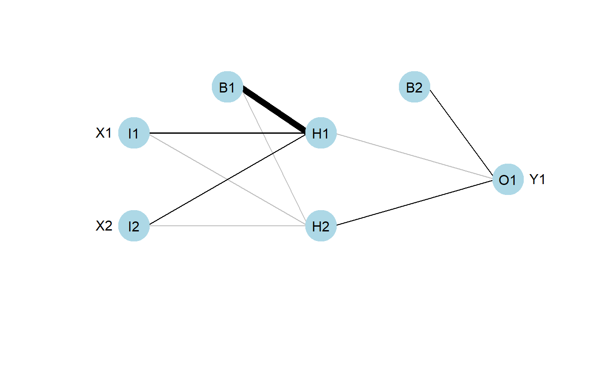
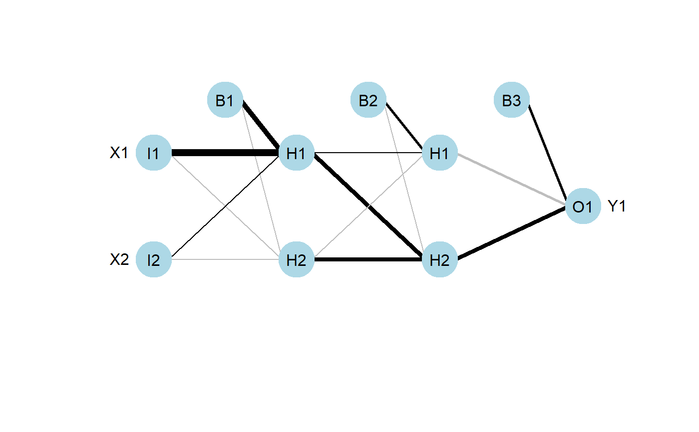
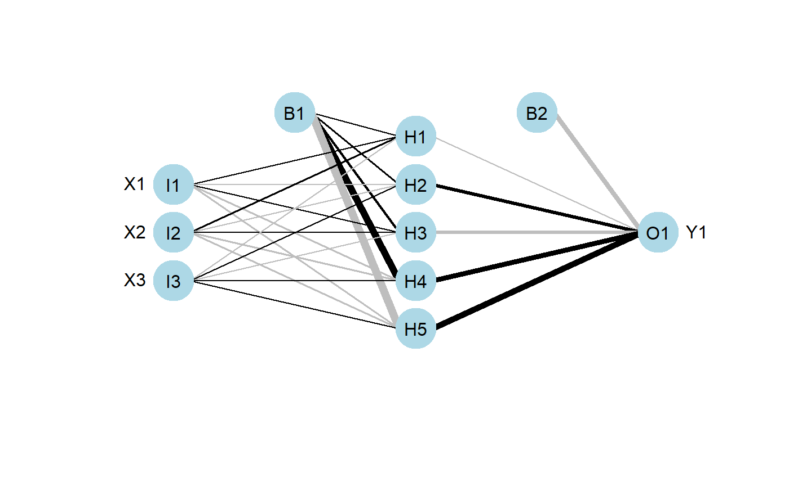
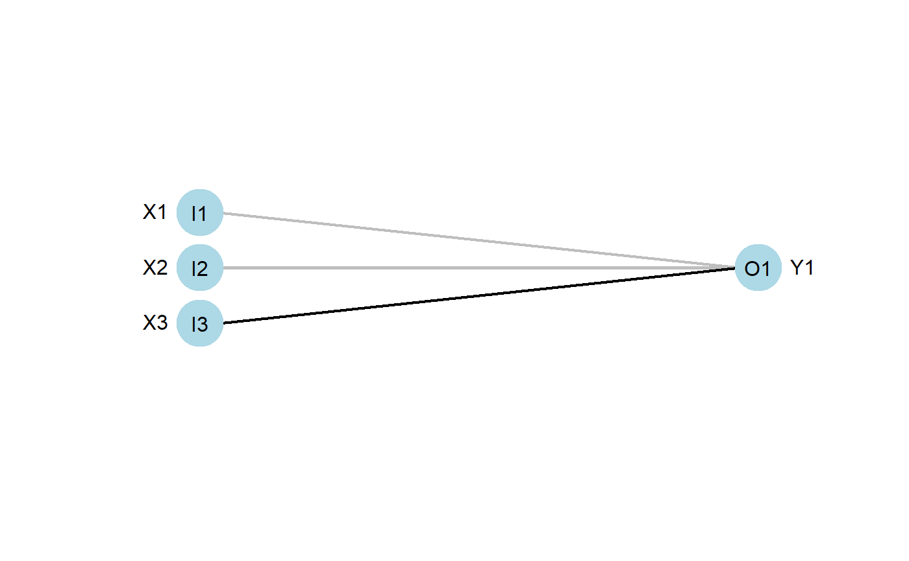

plotnet.RdPlot a neural interpretation diagram for a neural network object
plotnet(mod_in, ...) # S3 method for default plotnet(mod_in, x_names, y_names, struct = NULL, nid = TRUE, all_out = TRUE, all_in = TRUE, bias = TRUE, rel_rsc = c(1, 7), circle_cex = 5, node_labs = TRUE, var_labs = TRUE, line_stag = NULL, cex_val = 1, alpha_val = 1, circle_col = "lightblue", pos_col = "black", neg_col = "grey", bord_col = "lightblue", max_sp = FALSE, pad_x = 1, prune_col = NULL, prune_lty = "dashed", skip = NULL, ...) # S3 method for nnet plotnet(mod_in, x_names = NULL, y_names = NULL, skip = FALSE, ...) # S3 method for numeric plotnet(mod_in, struct, x_names = NULL, y_names = NULL, ...) # S3 method for mlp plotnet(mod_in, x_names = NULL, y_names = NULL, prune_col = NULL, prune_lty = "dashed", ...) # S3 method for nn plotnet(mod_in, x_names = NULL, y_names = NULL, ...) # S3 method for train plotnet(mod_in, x_names = NULL, y_names = NULL, skip = FALSE, ...)
| mod_in | neural network object or numeric vector of weights |
|---|---|
| ... | additional arguments passed to or from other methods |
| x_names | chr string indicating names for input variables, default from model object |
| y_names | chr string indicating names for output variables, default from model object |
| struct | numeric vector equal in length to the number of layers in the network. Each number indicates the number of nodes in each layer starting with the input and ending with the output. An arbitrary number of hidden layers can be included. |
| nid | logical value indicating if neural interpretation diagram is plotted, default |
| all_out | chr string indicating names of response variables for which connections are plotted, default all |
| all_in | chr string indicating names of input variables for which connections are plotted, default all |
| bias | logical value indicating if bias nodes and connections are plotted, default |
| rel_rsc | numeric indicating the scaling range for the width of connection weights |
| circle_cex | numeric value indicating size of nodes, default 5 |
| node_labs | logical value indicating if labels are plotted directly on nodes, default |
| var_labs | logical value indicating if variable names are plotted next to nodes, default |
| line_stag | numeric value that specifies distance of connection weights from nodes |
| cex_val | numeric value indicating size of text labels, default 1 |
| alpha_val | numeric value (0-1) indicating transparency of connections, default 1 |
| circle_col | chr string indicating color of nodes, default |
| pos_col | chr string indicating color of positive connection weights, default |
| neg_col | chr string indicating color of negative connection weights, default |
| bord_col | chr string indicating border color around nodes, default |
| max_sp | logical value indicating if space between nodes in each layer is maximized, default |
| pad_x | numeric for increasing or decreasing padding on the x-axis, values less than one will increase padding and values greater than one will decrease padding |
| prune_col | chr string indicating color of pruned connections, otherwise not shown |
| prune_lty | line type for pruned connections, passed to |
| skip | logical if skip layer connections are plotted instead of the primary network |
A graphics object unless wts_only = TRUE, then neural network weights from neuralweights.
This function plots a neural network as a neural interpretation diagram as in Ozesmi and Ozesmi (1999). Options to plot without color-coding or shading of weights are also provided. The default settings plot positive weights between layers as black lines and negative weights as grey lines. Line thickness is in proportion to relative magnitude of each weight. The first layer includes only input variables with nodes labelled arbitrarily as I1 through In for n input variables. One through many hidden layers are plotted with each node in each layer labelled as H1 through Hn. The output layer is plotted last with nodes labeled as O1 through On. Bias nodes connected to the hidden and output layers are also shown. Neural networks created using mlp do not show bias layers.
A primary network and a skip layer network can be plotted for nnet models with a skip layer connection. The default is to plot the primary network, whereas the skip layer network can be viewed with skip = TRUE. If nid = TRUE, the line widths for both the primary and skip layer plots are relative to all weights. Viewing both plots is recommended to see which network has larger relative weights. Plotting a network with only a skip layer (i.e., no hidden layer, size = 0) will include bias connections to the output layer, whereas these are not included in the plot of the skip layer if size is greater than zero.
The numeric method for plotting requires the input weights to be in a specific order given the structure of the network. An additional argument struct (from neuralweights is also required that lists the number of nodes in the input, hidden, and output layers. The example below for the numeric input shows the correct weight vector for a simple neural network model with two input variables, one output variable, and one hidden layer with two nodes. Bias nodes are also connected to the hidden and output layer. Using the plot syntax of I, H, O, and B for input, hidden, output, and bias to indicate weighted connections between layers, the correct weight order for the mod_in vector is B1-H1, I1-H1, I2-H1, B1-H2, I1-H2, I2-H2, B2-O1, H1-O1, H2-O1. For a generic network (three layers) with n input nodes, j hidden nodes, and k output nodes, the weights are ordered as the connections from B1, I1,...,In to H1,...,Hj, then B2, H1,..,Hj to O1,...,Ok.
Beck, M.W. 2018. NeuralNetTools: Visualization and Analysis Tools for Neural Networks. Journal of Statistical Software. 85(11):1-20.
Ozesmi, S.L., Ozesmi, U. 1999. An artificial neural network approach to spatial habitat modeling with interspecific interaction. Ecological Modelling. 116:15-31.
## using numeric input # B1-H1, I1-H1, I2-H1, B1-H2, I1-H2, I2-H2, B2-O1, H1-O1, H2-O1. wts_in <- c(13.12, 1.49, 0.16, -0.11, -0.19, -0.16, 0.56, -0.52, 0.81) struct <- c(2, 2, 1) #two inputs, two hidden, one output plotnet(wts_in, struct = struct)# numeric input, two hidden layers # B1-H11, I1-H11, I2-H11, B1-H12, I1-H12, I2-H12, B2-H21, H11-H21, H12-H21, # B2-H22, H11-H22, H12-H22, B3-O1, H21-O1, H22-O1 wts_in <- c(1.12, 1.49, 0.16, -0.11, -0.19, -0.16, 0.5, 0.2, -0.12, -0.1, 0.89, 0.9, 0.56, -0.52, 0.81) struct <- c(2, 2, 2, 1) # two inputs, two (two nodes each), one output plotnet(wts_in, struct = struct)## using nnet library(nnet) data(neuraldat) set.seed(123) mod <- nnet(Y1 ~ X1 + X2 + X3, data = neuraldat, size = 5)#> # weights: 26 #> initial value 259.012592 #> iter 10 value 0.986480 #> iter 20 value 0.225311 #> iter 30 value 0.139585 #> iter 40 value 0.098961 #> iter 50 value 0.038200 #> iter 60 value 0.022839 #> iter 70 value 0.013774 #> iter 80 value 0.008530 #> iter 90 value 0.005172 #> iter 100 value 0.003044 #> final value 0.003044 #> stopped after 100 iterationsplotnet(mod)## plot the skip layer from nnet model mod <- nnet(Y1 ~ X1 + X2 + X3, data = neuraldat, size = 5, skip = TRUE)#> # weights: 29 #> initial value 91.886893 #> iter 10 value 0.302027 #> iter 20 value 0.028424 #> iter 30 value 0.021294 #> iter 40 value 0.019159 #> iter 50 value 0.017492 #> iter 60 value 0.016319 #> iter 70 value 0.015259 #> iter 80 value 0.013234 #> iter 90 value 0.011249 #> iter 100 value 0.006222 #> final value 0.006222 #> stopped after 100 iterationsplotnet(mod, skip = TRUE)#> NULL# NOT RUN { ## using RSNNS, no bias layers library(RSNNS) x <- neuraldat[, c('X1', 'X2', 'X3')] y <- neuraldat[, 'Y1'] mod <- mlp(x, y, size = 5) plotnet(mod) # pruned model using code from RSSNS pruning demo pruneFuncParams <- list(max_pr_error_increase = 10.0, pr_accepted_error = 1.0, no_of_pr_retrain_cycles = 1000, min_error_to_stop = 0.01, init_matrix_value = 1e-6, input_pruning = TRUE, hidden_pruning = TRUE) mod <- mlp(x, y, size = 5, pruneFunc = "OptimalBrainSurgeon", pruneFuncParams = pruneFuncParams) plotnet(mod) plotnet(mod, prune_col = 'lightblue') ## using neuralnet library(neuralnet) mod <- neuralnet(Y1 ~ X1 + X2 + X3, data = neuraldat, hidden = 5) plotnet(mod) ## using caret library(caret) mod <- train(Y1 ~ X1 + X2 + X3, method = 'nnet', data = neuraldat, linout = TRUE) plotnet(mod) ## a more complicated network with categorical response AND <- c(rep(0, 7), 1) OR <- c(0, rep(1, 7)) binary_data <- data.frame(expand.grid(c(0, 1), c(0, 1), c(0, 1)), AND, OR) mod <- neuralnet(AND + OR ~ Var1 + Var2 + Var3, binary_data, hidden = c(6, 12, 8), rep = 10, err.fct = 'ce', linear.output = FALSE) plotnet(mod) ## recreate the previous example with numeric inputs # get the weights and structure in the right format wts <- neuralweights(mod) struct <- wts$struct wts <- unlist(wts$wts) # plot plotnet(wts, struct = struct) ## color input nodes by relative importance mod <- nnet(Y1 ~ X1 + X2 + X3, data = neuraldat, size = 5) rel_imp <- garson(mod, bar_plot = FALSE)$rel_imp cols <- colorRampPalette(c('lightgreen', 'darkgreen'))(3)[rank(rel_imp)] plotnet(mod, circle_col = list(cols, 'lightblue')) # }